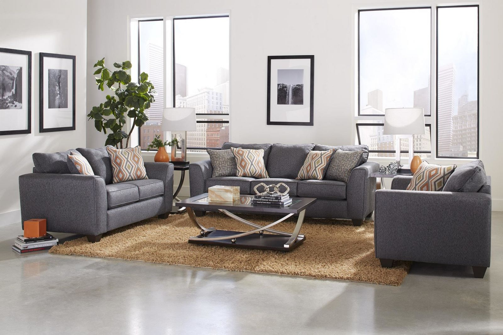
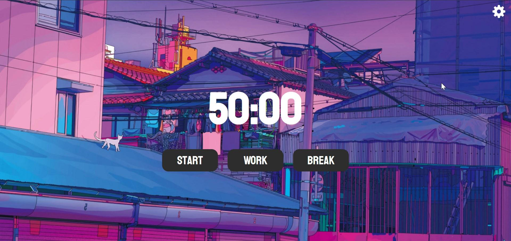

Latest Projects

Furnisphere
A responsive front-end website for a furniture brand showcasing modern and stylish home essentials. Built using HTML, CSS, and JavaScript, the site features a clean layout, product listings, and smooth navigation to enhance user experience and visual appeal.

Portfolio
A clean and responsive portfolio website built using HTML, CSS, and JavaScript to showcase my projects, skills, and experience. It highlights my technical strengths and provides easy navigation for recruiters and collaborators

FocusScape
FocusScape is a productivity-focused web app built using HTML, CSS, and JavaScript. It features a session timer, task manager, dark mode toggle, sound alerts, and session tracking with local storage to enhance user focus and workflow.